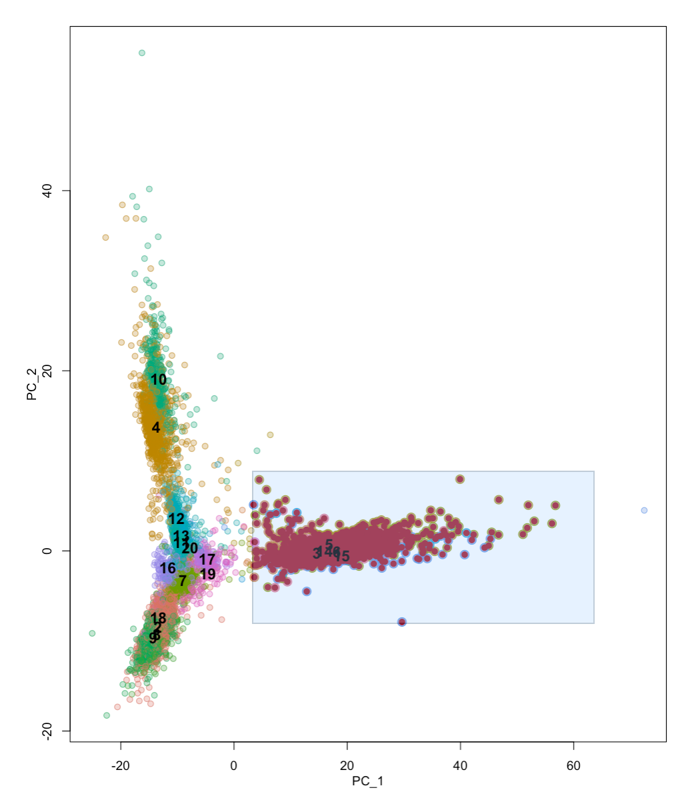
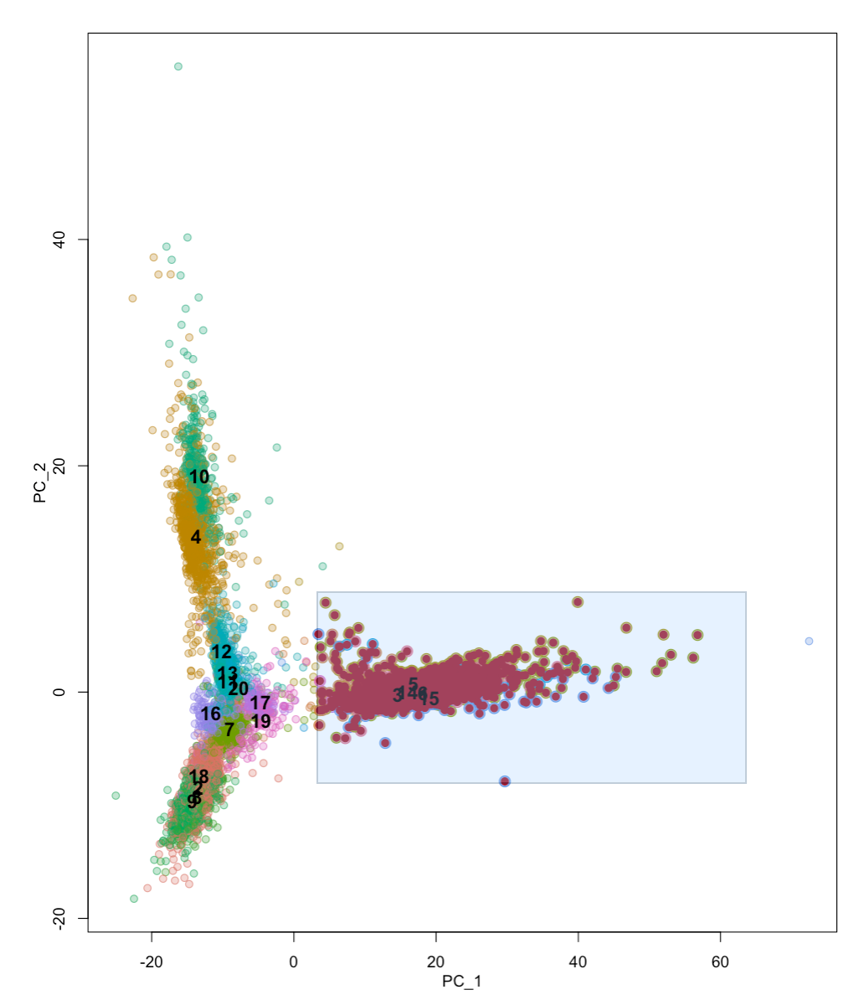

Pilot_GoMAnalysis
Anthony Hung
2020-01-29
Last updated: 2020-02-03
Checks: 6 1
Knit directory: OAStrain/
This reproducible R Markdown analysis was created with workflowr (version 1.5.0). The Checks tab describes the reproducibility checks that were applied when the results were created. The Past versions tab lists the development history.
The R Markdown file has unstaged changes. To know which version of the R Markdown file created these results, you’ll want to first commit it to the Git repo. If you’re still working on the analysis, you can ignore this warning. When you’re finished, you can run wflow_publish to commit the R Markdown file and build the HTML.
Great job! The global environment was empty. Objects defined in the global environment can affect the analysis in your R Markdown file in unknown ways. For reproduciblity it’s best to always run the code in an empty environment.
The command set.seed(20191127) was run prior to running the code in the R Markdown file. Setting a seed ensures that any results that rely on randomness, e.g. subsampling or permutations, are reproducible.
Great job! Recording the operating system, R version, and package versions is critical for reproducibility.
Nice! There were no cached chunks for this analysis, so you can be confident that you successfully produced the results during this run.
Great job! Using relative paths to the files within your workflowr project makes it easier to run your code on other machines.
Great! You are using Git for version control. Tracking code development and connecting the code version to the results is critical for reproducibility. The version displayed above was the version of the Git repository at the time these results were generated.
Note that you need to be careful to ensure that all relevant files for the analysis have been committed to Git prior to generating the results (you can use wflow_publish or wflow_git_commit). workflowr only checks the R Markdown file, but you know if there are other scripts or data files that it depends on. Below is the status of the Git repository when the results were generated:
Ignored files:
Ignored: .Rhistory
Ignored: .Rproj.user/
Ignored: data/ANT1_2.rds
Ignored: data/HumanLiverSeurat.rds
Ignored: data/RUVsCPM.rds
Ignored: data/RUVsOut.rds
Ignored: data/filtered_counts.rds
Ignored: data/humanLiverSubset_hepatocytes.rds
Ignored: data/norm_filtered_counts.rds
Ignored: data/raw_counts_relabeled.rds
Ignored: output/ANT1.2.rds
Untracked files:
Untracked: analysis/figures/
Untracked: data/GSE104782_Table_Cell_quality_information_and_clustering_information.csv
Unstaged changes:
Modified: analysis/Pilot_GoMAnalysis.Rmd
Note that any generated files, e.g. HTML, png, CSS, etc., are not included in this status report because it is ok for generated content to have uncommitted changes.
These are the previous versions of the R Markdown and HTML files. If you’ve configured a remote Git repository (see ?wflow_git_remote), click on the hyperlinks in the table below to view them.
| File | Version | Author | Date | Message |
|---|---|---|---|---|
| Rmd | 2613215 | Anthony Hung | 2020-02-02 | outside bulk datasets comparison to my pilot bulk data |
Applying topic modeling approaches on sc pilot data
Include data from: Pilot (iPSC-derived chondrocytes from 3 individuals x 2 treatment conditions; 10x) MSC-Pilot (Genevieve Housman’s human data of iPSCs and iPSC-derived MSCs from human-chimp study; 10x) Hepatocytes (from liver homogenate; 10x) Chondrocytes (from OA patients; STRT protocol)
Load Libraries
library(Seurat)
library(tidyverse)── Attaching packages ─────────────────────────────────────────────────────────────────────── tidyverse 1.3.0 ──✔ ggplot2 3.2.1 ✔ purrr 0.3.3
✔ tibble 2.1.3 ✔ dplyr 0.8.3
✔ tidyr 1.0.0 ✔ stringr 1.4.0
✔ readr 1.3.1 ✔ forcats 0.4.0── Conflicts ────────────────────────────────────────────────────────────────────────── tidyverse_conflicts() ──
✖ dplyr::filter() masks stats::filter()
✖ dplyr::lag() masks stats::lag()Load in datasets
Load in datasets and create Seurat objects for each of them. Add metadata about the cell type they were assigned in their original contexts.
#Pilot data
ANT1.2 <- readRDS("data/ANT1_2.rds")
ANT1.2 <- AddMetaData(ANT1.2, "iPSC-Chondrocyte", col.name = "Cell.Type")
dim(ANT1.2)[1] 33538 2479#Chondrocytes from OA patients (https://www.ncbi.nlm.nih.gov/pubmed/30026257) run through STRT protocol
chondro <- read.table("/project2/gilad/anthonyhung/Projects/OAStrain_project/outside_scData/GSE104782_allcells_UMI_count.txt.gz", header = T)
chondro_genes <- chondro[,1]
chondro_data <- chondro[,-1]
chondro <- chondro_data
rownames(chondro) <- chondro_genes
#load chondro cluster data from paper
chondro_metadata <- read_csv("data/GSE104782_Table_Cell_quality_information_and_clustering_information.csv")Parsed with column specification:
cols(
Cell = col_character(),
`Raw reads` = col_double(),
`Clean reads` = col_double(),
`Aligned reads` = col_double(),
`Mapping rate` = col_character(),
`Gene number` = col_double(),
`Transcript number` = col_double(),
Cluster = col_character()
)#subset data to include only those that were assigned to a chondrocyte cluster in the paper
chondro.filtered <- chondro[,!is.na(chondro_metadata$Cluster)]
cluster.ident <- paste0("Chondro ", chondro_metadata$Cluster[!is.na(chondro_metadata$Cluster)])
#Create seurat object from chondrocytes
chondro.seurat <- CreateSeuratObject(chondro.filtered, project="Chondrocytes")Warning: Feature names cannot have underscores ('_'), replacing with dashes
('-')chondro.seurat <- AddMetaData(chondro.seurat, cluster.ident, col.name = "Cell.Type")
dim(chondro.seurat)[1] 24153 1464#iPSCs/MSCs/osteoblasts from Human/chimp panel. Combine all the datasets and subset for humans
ghousman_data_dir <- ("/project2/gilad/ghousman/skeletal-human-chimp/human-chimp-skeletal-scRNA/data/cellranger-data-full/")
gh_ipsc_1.1 <- readRDS(paste0(ghousman_data_dir, "h.c.dat.spp.GHO-1.rds"))
gh_msc_1.1 <- readRDS(paste0(ghousman_data_dir, "h.c.dat.spp.GHO-2.rds"))
gh_ipsc_1.2 <- readRDS(paste0(ghousman_data_dir, "h.c.dat.spp.HOU-10.rds"))
gh_msc_1.2 <- readRDS(paste0(ghousman_data_dir, "h.c.dat.spp.HOU-12.rds"))
gh_ipsc_2.1 <- readRDS(paste0(ghousman_data_dir, "h.c.dat.spp.HOU-1.rds"))
gh_msc_2.1 <- readRDS(paste0(ghousman_data_dir, "h.c.dat.spp.HOU-2.rds"))
gh_ipsc_3.1 <- readRDS(paste0(ghousman_data_dir, "h.c.dat.spp.HOU-9.rds"))
gh_msc_3.1 <- readRDS(paste0(ghousman_data_dir, "h.c.dat.spp.HOU-11.rds"))
gh_big <- merge(gh_ipsc_1.1, y = c(gh_msc_1.1, gh_ipsc_1.2, gh_msc_1.2, gh_ipsc_2.1, gh_msc_2.1, gh_ipsc_3.1, gh_msc_3.1),
add.cell.ids = c("ipsc1.1", "msc1.1", "ipsc1.2", "msc1.2", "ipsc2.1", "msc2.1", "ipsc3.1", "msc3.1"), project = "ghousman")
gh_big_humans <- subset(gh_big, species == "Human")
gh_big_humans <- AddMetaData(gh_big_humans, "Ghousman", col.name = "orig.ident")
dim(gh_big_humans)[1] 19399 23283#Human Liver samples run through 10x (https://doi.org/10.1038/s41467-018-06318-7). This is a subset of the entire dataset, which is from whole liver homogenate. I used scViz to subset the data for clusters that were called hepatocytes in the original study (3490 cells)
liver <- readRDS("data/humanLiverSubset_hepatocytes.rds")
liver <- AddMetaData(liver, "Hepatocyte", col.name = "Cell.Type")
dim(liver)[1] 20007 3490 

Merge Datasets
Merge the seurat objects into one large one, keeping metadata about which study they originated in as well as their assigned cell type.
#Merge, entering a "0" value for genes that are not in common
Combined <- merge(ANT1.2, y = c(chondro.seurat, gh_big_humans, liver), project = "Combined")
# merge based on common genes between ALL datasets
common.features <- Reduce(intersect, list(rownames(ANT1.2), rownames(chondro.seurat), rownames(gh_big_humans), rownames(liver)))
length(x = common.features)[1] 14809Combined.common <- merge(ANT1.2[common.features, ], y = c(chondro.seurat[common.features, ], gh_big_humans[common.features, ], liver[common.features, ]), project = "Combined.common")Warning in is.na(x = cells): is.na() applied to non-(list or vector) of type
'NULL'Now we can look at the cells in Seurat
VlnPlot(Combined.common, features = c("nFeature_RNA", "nCount_RNA"), ncol = 2, group.by = "orig.ident")VlnPlot(Combined.common, features = c("nFeature_RNA", "nCount_RNA"), ncol = 2, group.by = "Cell.Type")# FeatureScatter is typically used to visualize feature-feature relationships, but can be used
# for anything calculated by the object, i.e. columns in object metadata, PC scores etc.
FeatureScatter(Combined.common, feature1 = "nCount_RNA", feature2 = "nFeature_RNA")Normalizing Data
Combined.common <- NormalizeData(Combined.common, normalization.method = "LogNormalize", scale.factor = 10000)Feature selection
Combined.common <- FindVariableFeatures(Combined.common, selection.method = "vst", nfeatures = 2000)
plot_variable_features <- function(seurat.obj){
# Identify the 10 most highly variable genes
top10 <- head(VariableFeatures(seurat.obj), 10)
# plot variable features with and without labels
plot1 <- VariableFeaturePlot(seurat.obj) +
theme(legend.position="bottom")
plot2 <- LabelPoints(plot = plot1, points = top10, repel = TRUE) +
theme(legend.position="bottom")
return(CombinePlots(plots = list(plot1, plot2)))
}
plot_variable_features(Combined.common)Warning: Using `as.character()` on a quosure is deprecated as of rlang 0.3.0.
Please use `as_label()` or `as_name()` instead.
This warning is displayed once per session.When using repel, set xnudge and ynudge to 0 for optimal resultsWarning: Transformation introduced infinite values in continuous x-axisWarning: Transformation introduced infinite values in continuous x-axis
Scaling Data
scale_data <- function(seurat.obj){
all.genes <- rownames(seurat.obj)
return(ScaleData(seurat.obj, features = all.genes))
}
Combined.common <- scale_data(Combined.common)Centering and scaling data matrixDimensionality Reduction
Using the highly variable features selected above, perform PCA
nPC <- 100
Combined.common <- RunPCA(Combined.common, features = VariableFeatures(object = Combined.common), npcs = nPC)PC_ 1
Positive: FMOD, PRELP, MGP, COMP, SCRG1, BGN, CILP, DCN, NDUFA4L2, MIA
CHAD, FGFBP2, PCOLCE2, S100B, SMOC2, RGCC, MMP3, PLA2G2A, CD55, ANGPTL2
ATP6V0C, GPRC5A, IFITM1, OGN, GABARAP, COL11A2, LUM, GPX3, COX7A1, C11orf96
Negative: PMAIP1, TAF9, ALPL, CRABP2, PTN, ID1, PINX1, MMP1, DUSP6, SAA2
AKR1B1, MT1H, DCLK1, CCDC71L, FABP5, SPINK1, AIF1, HLA-DPB1, MMP9, PREX2
RARRES2, SAA1, MAEA, IGFBP5, SUV39H1, HLA-DRB1, CA12, KLK10, COL5A3, LRRC8B
PC_ 2
Positive: RBP4, MT1G, TF, SERPINA1, SERPING1, SAA2, MT1X, SAA1, C1R, RARRES2
CP, TMEM176B, MT1H, TMEM176A, MT1M, MT1F, CFI, UQCR11, HSD11B1, SPINK1
CLU, A2M, CFH, SERPINA6, MT1E, AKR1C1, PRG4, CD14, NDUFA13, F5
Negative: SPARC, COL1A1, TNFRSF12A, COL5A2, COL1A2, COL5A1, ANXA1, TIMP1, IER3, PHLDA2
COL6A2, HSPB1, GSN, ARID5B, CCDC80, IGFBP5, COL3A1, FN1, NT5E, PLAUR
TGFBI, GARS, DAB2, SERPINE2, SLC3A2, IGFBP6, FHL1, PDLIM4, CDKN1A, KCNMA1
PC_ 3
Positive: TAF9, PNP, CD9, PMAIP1, IER2, FGF2, EIF4E, MLF1, COL9A3, FXYD6
TCEAL2, FABP5, SLC29A1, ID1, NOP16, SLC2A1, ITM2A, PHLDA1, NMB, SLC3A2
PTN, ASNS, ADM, AKR1B1, S100B, MIA, CHAD, NDUFA4L2, CNPY2, FGFBP2
Negative: KCTD16, COL3A1, CST3, SPON2, SERPINE2, GPC6, LDLRAD4, PTGER2, LRPAP1, AQP1
FAM89A, SRPX2, COL12A1, COL5A1, COL1A2, SEMA3C, MXRA5, RUNX1, FOXO1, FKBP2
COL5A2, CRISPLD2, RORA, COL1A1, PPP1R12B, PLOD2, ERG, SLC40A1, SERPINF1, STC2
PC_ 4
Positive: UGP2, PDPN, SOX4, OLFML3, COL9A3, ALPL, FABP5, FGFR1, EGLN3, JMJD1C
GFPT2, FADS1, GPC6, TCEAL2, PTN, PLXDC2, FOXO1, TSPAN6, ANOS1, FBXO2
SOCS2, ANK3, STK26, MAP2K6, N4BP2, LDLRAD4, CRISPLD2, SKIL, KCNK1, IVNS1ABP
Negative: FN1, ANXA1, MT2A, DUSP1, DAB2, PHLDA2, IGFBP5, B2M, CD44, PLAUR
CRIP2, ARID5B, CCDC80, GREM1, MMP1, ITGA5, NT5E, IGFBP6, EFEMP1, RCAN1
GSN, PLK2, KLF2, INHBA, JUN, IER3, COL1A1, KLF6, CDKN1A, CRYAB
PC_ 5
Positive: P3H2, BMP2, KCNMA1, LRRC8C, NGF, CLCF1, TGFBI, COL6A3, SYNJ2, GPRC5A
CD44, UGDH, FOSL1, C11orf96, CAV1, ST3GAL1, B3GNT5, FGF2, S100A3, FGF1
LIF, PTPRE, SMOX, TENM2, GIPR, ZNF365, NPR2, TNC, NFATC2, SLC4A5
Negative: DNAJB1, CRYAB, NR4A1, FOS, HSPA1A, NR4A2, HSPA1B, DDIT3, RGS16, HES1
RASD1, BHLHE41, GEM, MYLIP, OSR2, FOXC1, DUSP1, USP53, RSRP1, PPP1R10
TXNIP, WWP2, CYSTM1, ZFAND2A, MXRA8, CSGALNACT1, LMO2, RERG, DNAJB4, CLK1 # Examine and visualize PCA results a few different ways
print(Combined.common[["pca"]], dims = 1:5, nfeatures = 5)PC_ 1
Positive: FMOD, PRELP, MGP, COMP, SCRG1
Negative: PMAIP1, TAF9, ALPL, CRABP2, PTN
PC_ 2
Positive: RBP4, MT1G, TF, SERPINA1, SERPING1
Negative: SPARC, COL1A1, TNFRSF12A, COL5A2, COL1A2
PC_ 3
Positive: TAF9, PNP, CD9, PMAIP1, IER2
Negative: KCTD16, COL3A1, CST3, SPON2, SERPINE2
PC_ 4
Positive: UGP2, PDPN, SOX4, OLFML3, COL9A3
Negative: FN1, ANXA1, MT2A, DUSP1, DAB2
PC_ 5
Positive: P3H2, BMP2, KCNMA1, LRRC8C, NGF
Negative: DNAJB1, CRYAB, NR4A1, FOS, HSPA1A VizDimLoadings(Combined.common, dims = 1:2, reduction = "pca")DimPlot(Combined.common, reduction = "pca", group.by = "Cell.Type")# var explained by top 10 PCs
mat <- Seurat::GetAssayData(Combined.common, assay = "RNA", slot = "scale.data")
pca <- Combined.common[["pca"]]
# Get the total variance:
total_variance <- sum(matrixStats::rowVars(mat))
eigValues = (pca@stdev)^2 ## EigenValues
varExplained = eigValues / total_variance
DimHeatmap(Combined.common, dims = 1:15, cells = 500, balanced = TRUE)#extract scaled data for highlyvargenes to a matrix outside of seurat to perform PCA and examine varexplained
source("code/PCA_fn.R")
library("RColorBrewer")
library("scales")
Attaching package: 'scales'The following object is masked from 'package:purrr':
discardThe following object is masked from 'package:readr':
col_factor# Load colors
colors <- colorRampPalette(c(brewer.pal(9, "Blues")[1],brewer.pal(9, "Blues")[9]))(100)
pal <- c(brewer.pal(9, "Set1"), brewer.pal(8, "Set2"), brewer.pal(12, "Set3"))
scaled <- Combined.common@assays$RNA@scale.data[VariableFeatures(Combined.common),]
dim(scaled)[1] 2000 30716pca_genes <- prcomp(t(scaled), scale = F)
scores <- pca_genes$x
### PCA Raw Data
for (n in 1:3){
col.v <- pal[as.integer(factor(Combined.common@meta.data$labels))]
plot_scores(pca_genes, scores, n, n+1, cols = col.v, legend = F, points = T)
}#% Var explained by top 10 pcs
for(n in 1:10){
print(n)
print(summary(pca_genes)$importance[2,n]*100)
}[1] 1
[1] 9.527
[1] 2
[1] 3.484
[1] 3
[1] 2.648
[1] 4
[1] 1.918
[1] 5
[1] 0.737
[1] 6
[1] 0.725
[1] 7
[1] 0.568
[1] 8
[1] 0.539
[1] 9
[1] 0.394
[1] 10
[1] 0.35ElbowPlot(Combined.common, ndims = nPC) #50 PCs?
sessionInfo()R version 3.4.3 (2017-11-30)
Platform: x86_64-pc-linux-gnu (64-bit)
Running under: Scientific Linux 7.4 (Nitrogen)
Matrix products: default
BLAS/LAPACK: /software/openblas-0.2.19-el7-x86_64/lib/libopenblas_haswellp-r0.2.19.so
locale:
[1] LC_CTYPE=en_US.UTF-8 LC_NUMERIC=C
[3] LC_TIME=en_US.UTF-8 LC_COLLATE=en_US.UTF-8
[5] LC_MONETARY=en_US.UTF-8 LC_MESSAGES=en_US.UTF-8
[7] LC_PAPER=en_US.UTF-8 LC_NAME=C
[9] LC_ADDRESS=C LC_TELEPHONE=C
[11] LC_MEASUREMENT=en_US.UTF-8 LC_IDENTIFICATION=C
attached base packages:
[1] stats graphics grDevices utils datasets methods base
other attached packages:
[1] scales_1.1.0 RColorBrewer_1.1-2 forcats_0.4.0 stringr_1.4.0
[5] dplyr_0.8.3 purrr_0.3.3 readr_1.3.1 tidyr_1.0.0
[9] tibble_2.1.3 ggplot2_3.2.1 tidyverse_1.3.0 Seurat_3.1.1
loaded via a namespace (and not attached):
[1] readxl_1.3.1 backports_1.1.5 workflowr_1.5.0
[4] sn_1.5-4 plyr_1.8.4 igraph_1.2.4.2
[7] lazyeval_0.2.2 splines_3.4.3 listenv_0.8.0
[10] TH.data_1.0-10 digest_0.6.23 htmltools_0.4.0
[13] gdata_2.18.0 magrittr_1.5 cluster_2.0.6
[16] ROCR_1.0-7 globals_0.12.5 modelr_0.1.5
[19] matrixStats_0.55.0 RcppParallel_4.4.4 R.utils_2.9.2
[22] sandwich_2.5-1 colorspace_1.4-1 rvest_0.3.5
[25] ggrepel_0.8.1 haven_2.2.0 xfun_0.12
[28] crayon_1.3.4 jsonlite_1.6 zeallot_0.1.0
[31] survival_2.41-3 zoo_1.8-6 ape_5.3
[34] glue_1.3.1 gtable_0.3.0 leiden_0.3.1
[37] future.apply_1.3.0 BiocGenerics_0.24.0 mvtnorm_1.0-7
[40] DBI_1.0.0 bibtex_0.4.2 Rcpp_1.0.3
[43] metap_1.2 plotrix_3.7-2 viridisLite_0.3.0
[46] reticulate_1.13 rsvd_1.0.2 SDMTools_1.1-221.2
[49] stats4_3.4.3 tsne_0.1-3 htmlwidgets_1.5.1
[52] httr_1.4.1 gplots_3.0.1.1 TFisher_0.2.0
[55] ica_1.0-2 farver_2.0.3 pkgconfig_2.0.3
[58] R.methodsS3_1.7.1 uwot_0.1.5 dbplyr_1.4.2
[61] labeling_0.3 tidyselect_0.2.5 rlang_0.4.4
[64] reshape2_1.4.3 later_1.0.0 munsell_0.5.0
[67] cellranger_1.1.0 tools_3.4.3 cli_1.1.0
[70] generics_0.0.2 broom_0.5.2 ggridges_0.5.1
[73] evaluate_0.14 yaml_2.2.0 npsurv_0.4-0
[76] knitr_1.26 fs_1.3.1 fitdistrplus_1.0-14
[79] caTools_1.17.1.3 RANN_2.6.1 pbapply_1.4-2
[82] future_1.15.1 nlme_3.1-131 whisker_0.4
[85] R.oo_1.23.0 xml2_1.2.2 rstudioapi_0.10
[88] compiler_3.4.3 plotly_4.9.1 png_0.1-7
[91] lsei_1.2-0 reprex_0.3.0 stringi_1.4.3
[94] lattice_0.20-35 Matrix_1.2-18 multtest_2.34.0
[97] vctrs_0.2.0 mutoss_0.1-12 pillar_1.4.2
[100] lifecycle_0.1.0 Rdpack_0.11-0 lmtest_0.9-37
[103] RcppAnnoy_0.0.14 data.table_1.12.6 cowplot_0.9.3
[106] bitops_1.0-6 irlba_2.3.3 gbRd_0.4-11
[109] httpuv_1.5.2 R6_2.4.1 promises_1.1.0
[112] KernSmooth_2.23-15 gridExtra_2.3 codetools_0.2-15
[115] MASS_7.3-51.4 gtools_3.8.1 assertthat_0.2.1
[118] rprojroot_1.3-2 withr_2.1.2 sctransform_0.2.0
[121] mnormt_1.5-5 multcomp_1.4-8 parallel_3.4.3
[124] hms_0.5.2 grid_3.4.3 rmarkdown_1.18
[127] Rtsne_0.15 git2r_0.26.1 numDeriv_2016.8-1.1
[130] Biobase_2.38.0 lubridate_1.7.4